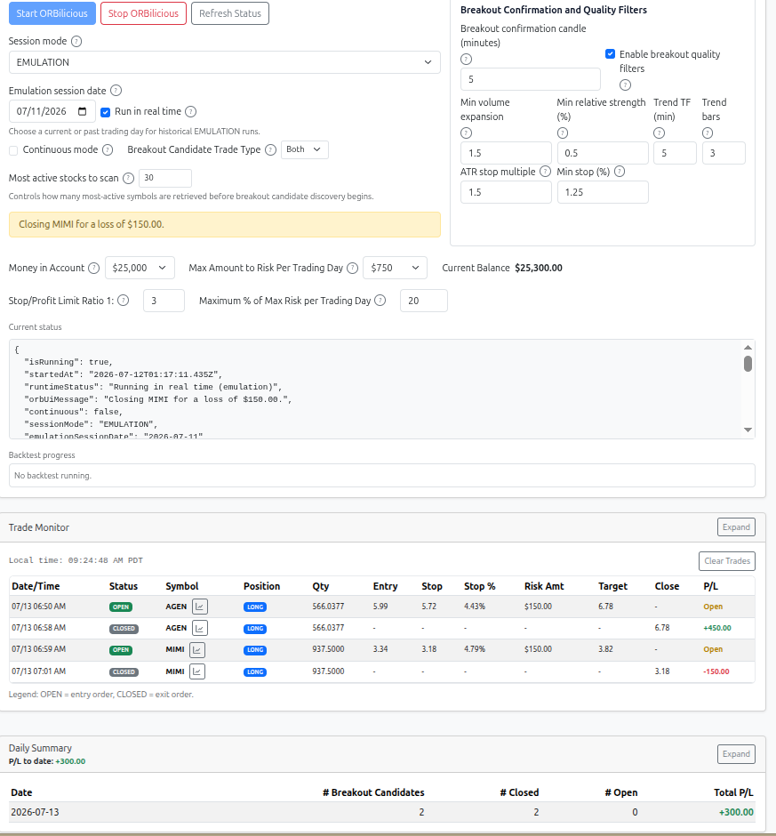
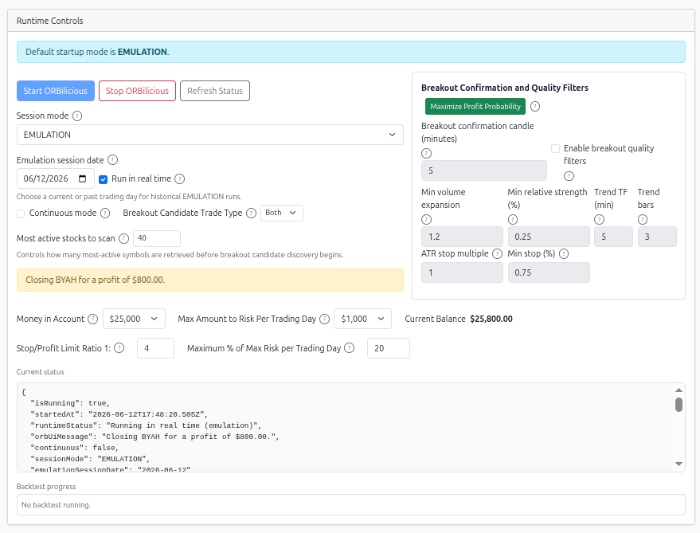
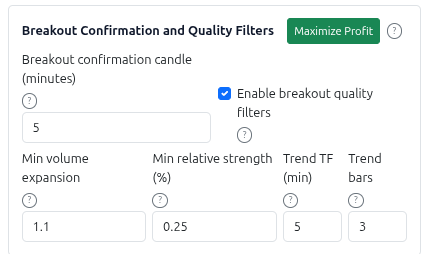
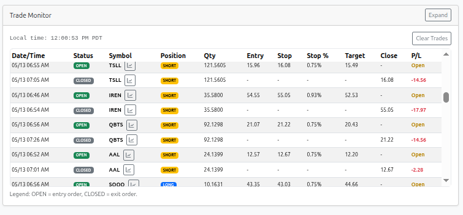
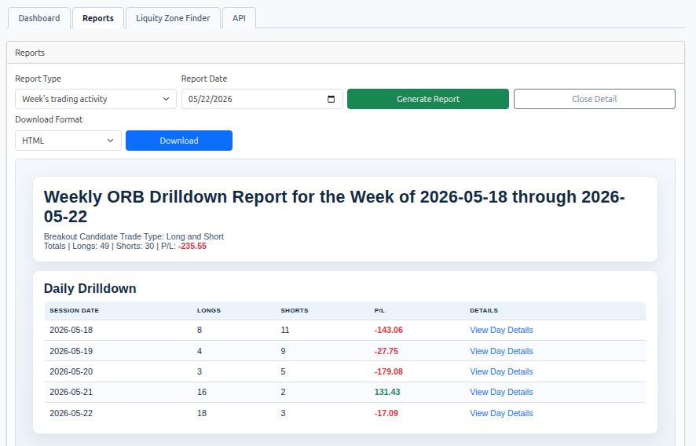
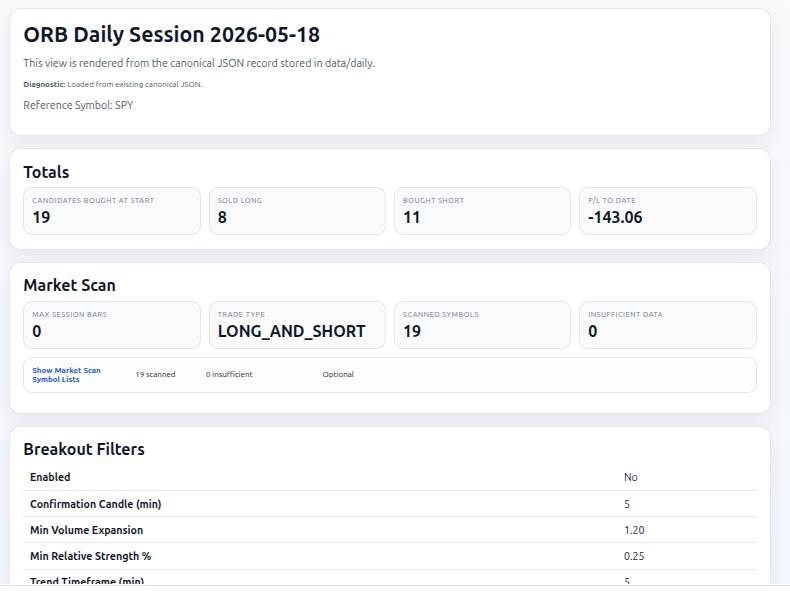
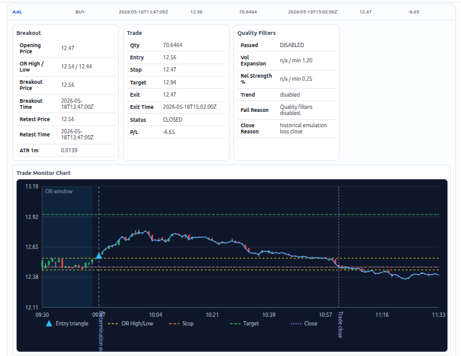
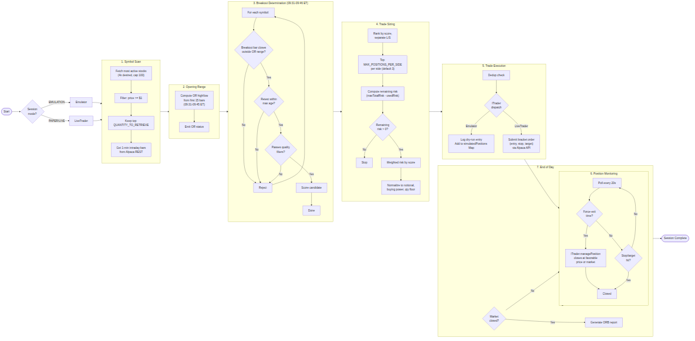

ORBilicious 0.0.8
Table of Contents
ORBilicious is a Node + TypeScript project that implements the Opening Range Breakout strategy. The project identifies stocks with a high probability of generating profit by detecting breakout price action. It begins by discovering the most actively traded stocks during the first minute after the New York markets opens. (Discovery occurs on a daily basis.) These stocks are then monitored over a 15-minute period using 1-minute candlesticks. Based on this observation and analysis, ORBilicious selects the daily set of breakout candidates—stocks that conform to the selection parameters defined by the Opening Range Breakout strategy. Then, ORBilicous executes the breakout candidates as long or short trades according to profit seeking entry and close behavior assumed in the Opening Range Breakout strategy. The project has the following features:
- Alpaca market-data integration
- Alpaca bracket-order execution (PAPER and LIVE modes)
- Mode-independent emulation via
Emulatorclass (EMULATION mode, no orders) ITraderinterface decoupling core strategy from mode-specific execution- Configurable most-active universe scan (default 40)
- Weighted total stop-risk sizing
- Basket normalization to fit both total planned stop-loss risk and available buying power
- Winston-based structured logging
- Source-level ORB PDF report generation (end-of-day live or historical by date)

Intended User
The intended user of this application is a person familiar with the practice of active investing in the NY Stock Markets and understands the Open Range Breakout strategy as it applies to day trading.
Important Disclaimer
Be advised: The creator of this application is NOT a financial adviser in any sense and takes absolutely no responsibility for the performance and behavior of this application. You are using the application AT YOUR OWN RISK!
User Manual
System Requirements
Hardware
- Processor: Multi-core CPU (2+ cores recommended)
- Memory: 4 GB RAM minimum, 8 GB recommended
- Disk: 500 MB free space for application files, logs, and generated reports
Software
- Runtime: Node.js 20.x or later ( LTS recommended)
- Package Manager: npm (bundled with Node.js)
- Operating System: macOS, Linux, or Windows with WSL
- Browser: Modern browser (Chrome, Firefox, Safari, Edge) for Web UI access
- Alpaca Account: Valid Alpaca API key and secret key for market data and/or trading
Network
- Internet connection: Required for live trading and real-time market data
- Alpaca API access: Outbound HTTPS (port 443) to
data.alpaca.marketsandpaper-api.alpaca.marketsorapi.alpaca.markets
Setup
- Install dependencies:
npm install
-
Create and configure
.envas described below. -
Configure
.env. Use .env.example as the starting template for your local runtime configuration. -
Copy the file into
.env:
cp .env.example .env
Then edit .env for operational use:
- Set
APCA_API_KEY_IDandAPCA_API_SECRET_KEYto your own Alpaca credentials. - Set
SESSION_MODEto the mode you intend to run:EMULATION,PAPER, orLIVE. (This value is reset automatically when the UI resets the value.) - Set
SESSION_DATEto a historical date for historical emulation, or leave it blank for current-day operation. (This value is reset automatically when the UI resets the value.) - Set
ALPACA_DATA_FEEDtoiexif delayed market data is acceptable, orsipif your Alpaca account has the required entitlement for real-time consolidated market data. - Review trading controls such as
MAX_TOTAL_RISK,HARD_BASKET_CAP,MAX_POSITION_NOTIONAL, andMAX_POSITIONS_PER_SIDEbefore running. (This value is reset automatically when the UI resets the value.) - If you are operating against live capital, verify
ALPACA_TRADING_BASE_URL,SESSION_MODE=LIVE, and all risk settings before starting the app.
The comments in .env.example explain the meaning of each variable inline.
Run the web UI:
tsx src/web/server.ts
Startup Scripts
All npm run <script> commands are defined in package.json in the project root.
| Script | What it does | Why it exists |
|---|---|---|
build |
Compiles TypeScript to JavaScript via tsc -p tsconfig.json. |
Required before running the compiled application; produces the dist/ directory. |
test |
Runs all unit tests through Mocha with ts-node. | Validates strategy, breakout detection, trade sizing, and API integration logic. |
test:smoke |
Runs smoke tests only (files named *.smoke.ts). Enabled by RUN_SMOKE_TESTS=1. |
Quick sanity check before a full test run. |
test:coverage |
Runs tests under nyc for code-coverage measurement. |
Identifies untested code paths. |
test:coverage-fast |
Same as test:coverage but excludes the slow reporting.test.ts file. |
Faster iteration during development. |
coverage:report |
Generates HTML/LCov coverage reports from a prior test:coverage run. |
Opens the HTML report in a browser for visual inspection. |
typecheck |
Runs the TypeScript compiler in --noEmit mode to check types without emitting files. |
Validates type safety — use before committing or in CI. |
full-start |
Builds and serves the Gatsby documentation site (port 9000) in the background, then starts the ORBilicious web UI (port 8787) via tsx src/web/server.ts. |
One-command startup for both the application and its documentation. |
full-stop |
Kills gatsby serve, and any node or tsx process running web/server. |
Cleans up all services started by full-start. |
clean |
Removes log files (logs/orbilicious-*.log, logs/trades/, logs/*.gz). |
Frees disk space and resets log state between runs. |
Web UI Usage
The web client provides a complete control panel to run and monitor the ORB strategy. Start it using:
./start.sh
This starts the web server on port 8787 by default and opens the UI automatically. Start ORBilicious from the web UI Start button so the Trade Monitor remains connected to runtime events.
Common usage:
./start.sh --no-open
This runs the web server without auto-opening a browser tab.
Supported options for ./start.sh:
--no-open,-n: Do not auto-open the browser.--web-port <PORT>,-p <PORT>: Set the web server port.--web-port=<PORT>: Alternate inline form for setting the web server port.--help,-h: Print command help and exit.
Notes:
- If no port option is provided,
WEB_PORTis used when set; otherwise the default is8787. - Any extra positional arguments are ignored by
./start.sh.
Runtime Controls

- Session mode: Choose
EMULATION(Alpaca data, no orders),PAPER(paper trading), orLIVE(live trading). - Emulation session date: For
EMULATIONmode, select a past trading day to run a historical backtest from that date forward. - Most active stocks to scan: Set how many most-active symbols are retrieved before breakout candidate discovery starts (default
40). Internally, the app over-fetches most-active symbols for filtering (4 x QUANTITY_TO_RETRIEVE) but caps that fetch at100symbols. - Continuous mode: Run the strategy continuously across multiple sessions (only available in
PAPERandLIVEmodes). After market close, the app stays alive and shows "Waiting for NY Market to open on {next date}" in the status area until the next market open. Before the NY open on a weekday, it shows "Waiting for NY Market to open on {today}". On weekends it shows the next Monday's date. - Breakout Candidate Trade Type: Filter which breakout directions are considered. Choose
Longto accept only bullish breakouts,Shortto accept only bearish breakouts, orBoth(default) to accept either direction. - Money in Account: Total account capital available (default $25,000). Overrides
HARD_BASKET_CAPenv var. - Max Amount to Risk Per Trading Day: Maximum total stop-loss risk per day (default $1,000). Overrides
MAX_TOTAL_RISKenv var. - Stop/Profit Limit Ratio 1: Reward-to-risk ratio for profit targets (default
4= 4R). OverridesSTOP_LOSS_PROFIT_RATIOenv var. - Maximum % of Max Risk per Trading Day: Caps any single position's risk as a percentage of the daily budget (default
20%). At 20% of a $750 budget, no single trade risks more than $150. Set higher (e.g.200%) to effectively disable the cap and let high-scoring breakouts concentrate the budget. Override viaMAX_RISK_PCT_PER_SYMBOLenv var. - Current status: Real-time execution state (running, stopped, error details).
- Backtest progress: For historical runs, shows current date, total dates, and completion.
How to use the Breakout Confirmation and Quality Filters

Use these controls together to reduce false breakouts while keeping enough opportunities for your session goals.
Each parameter is described below with its new default value, the reasoning for that default, and a behavioral-impact example:
-
Breakout Confirmation Candle (minutes) controls how long the breakout candle is. The breakout must close outside the opening range on this timeframe. Default
5.
Reasoning: 5 minutes provides a balanced window — long enough to filter momentary price spikes but short enough to capture fast intraday breakouts before momentum fades.
Example: Raise from5to10to require a longer breakout bar — fewer brief spikes qualify as breakouts, reducing whipsaw entries but potentially missing fast-break moves that reverse within 5 minutes. -
Breakout Quality Filters turns quality gating on or off. Quality gating means a breakout must pass all enabled quality checks before it is considered tradeable (volume expansion, relative strength/weakness, and higher-timeframe trend alignment). Default
on(enabled).
Reasoning: Quality filters reject breakouts that lack volume confirmation or trend support. Enabling by default dramatically reduces false signals and improves the signal-to-noise ratio of candidate entries. The Maximize Profit Probability button has been removed because enabling quality filters is the primary mechanism for maximizing profit probability — the filters themselves are the optimization.
Example: Toggle fromofftoonto reject breakouts that lack volume confirmation or trend support — candidate count drops sharply, but remaining entries have stronger institutional backing and lower reversal rates. -
Min Volume Expansion requires breakout-candle volume to exceed recent confirmation-candle volume by a minimum ratio. Default
1.5.
Reasoning: 1.5× was chosen as the optimal threshold based on historical analysis — it filters out low-volume drift breakouts while still capturing entries with meaningful institutional participation. The prior default of 1.2× let through too many noise entries on marginal volume.
Example: Raise from1.5to2.0to require double the volume — only breakouts with very heavy participation survive, reducing noise entries but excluding valid breakouts on moderate volume. -
Min Relative Strength (%) requires the breakout close to clear the opening-range boundary by a minimum percentage. Default
0.50%.
Reasoning: Doubling the relative-strength threshold from 0.25% to 0.50% eliminates breakouts that barely nudge past the opening range — these marginal moves reverse at a significantly higher rate. The higher threshold improves entry quality while still capturing early entries into strong trends.
Example: Raise from0.50%to0.75%to tighten further — fewer marginal breakouts pass, but strong directional moves that clear the range by a wide margin still enter early. -
Trend Timeframe (minutes) sets the aggregation period for higher-timeframe trend alignment. Default
5.
Reasoning: 5-minute bars provide responsive trend context that reacts quickly to intraday shifts — fast enough to capture trend changes during volatile sessions without the lag of longer timeframes.
Example: Raise from5to15to use 15-minute bars for trend context — trend signals become smoother and less reactive to short-term noise, but the trend assessment updates more slowly during fast intraday reversals. -
Trend Lookback Bars sets how many higher-timeframe bars define the trend context. Default
3.
Reasoning: 3 bars gives sufficient multi-bar confirmation to avoid false trend signals from single-bar spikes, while remaining responsive enough for intraday strategy windows.
Example: Raise from3to5to require more bars of trend confirmation — reduces false trend signals from single-bar spikes, but delays entry when a new trend forms quickly. -
ATR stop multiple scales the 1-minute Average True Range to set the stop-loss distance from entry. A higher multiplier gives trades more room to breathe through intraday volatility but increases per-trade loss. Default
1.5.
Reasoning: 1.5× ATR was identified through backtesting as a sweet spot — it provides enough room to avoid premature stop-outs on normal volatility without diluting the daily risk budget. The prior default of 1.0× caused excessive whipsaw stop-outs.
Example: Raise from1.5to2.0to increase stop-loss distance — fewer premature stop-outs, but each position risks more capital per share, reducing position size under the daily risk budget. -
Min stop (%) sets a hard floor on stop distance as a percentage of entry price. Prevents stops from being placed too tight when ATR is unusually low. Default
1.25%.
Reasoning: 0.75% was too tight for current market conditions, causing premature stop-outs on low-ATR stocks. Raising to 1.25% provides a more realistic floor that protects against microscopic stops while still allowing ATR-based stops for wider placement.
Example: Raise from1.25%to1.50%to ensure no stop is placed tighter than 1.5% of entry — protects against stop-outs on low-ATR stocks, but increases the minimum loss for every trade. -
Maximum % of Max Risk per Trading Day limits how much of the daily risk budget any single position can consume. The per-symbol cap is
maxTotalRisk × (maxRiskPctPerSymbol / 100). Default20%. Override viaMAX_RISK_PCT_PER_SYMBOLenv var.
Reasoning: 20% of a $750 budget caps each position at $150, ensuring adequate diversification (at least 5 positions) while allowing high-scoring breakouts meaningful allocation.
Example: Lower from20%to10%to prevent any one trade from risking more than $75 of a $750 budget — forces diversification across more symbols, but reduces position size on your highest-conviction idea.
Retest freshness is also enforced by environment setting: BREAKOUT_RETEST_MAX_AGE_MINUTES (default 1). In the current NY session, entries are skipped when the confirmation retest is older than this threshold. Set it to 0 to disable staleness filtering. In EMULATION mode the staleness check is bypassed entirely so all session breakouts are evaluated.
BREAKOUT_QUALITY_FILTERS_ENABLED is the single source of truth for both the Web UI's initial checkbox state and the runtime strategy behavior.
Suggested workflow:
- Start with the optimized defaults (
5minute confirmation, quality filters on, volume1.5, relative strength0.50, trend timeframe5, lookback3, ATR stop multiple1.5, min stop1.25%). - Run emulation for several recent sessions and watch candidate count, pass/fail behavior, and P/L consistency.
- Tighten filters further when you see too many weak or whipsaw entries.
- Relax filters when you see too few candidates or missed valid breakouts.
- Change one setting at a time so you can attribute the impact.
Concrete examples:
- Noisy open, too many fake breaks
Configuration purpose: make confirmation stricter so brief spikes do not qualify as breakouts.
Configuration: keep the optimized defaults (quality filters on, volume 1.5, relative strength 0.50).
Expected outcome: most noise entries are already excluded by the default filters; further tighten by raising volume expansion to 2.0 or relative strength to 0.75 if needed.
- Strong trend day, but valid breakouts are being missed
Configuration purpose: allow more momentum names through without fully removing quality checks.
Configuration: keep quality filters on, lower Min Relative Strength to 0.30, and lower Min Volume Expansion to 1.2.
Expected outcome: more candidates pass during broad directional moves, with a moderate increase in trade frequency while quality filters still prevent the weakest entries.
- Choppy session with mixed direction and weak follow-through
Configuration purpose: require stronger alignment so only the cleanest breakouts survive.
Configuration: keep quality filters on, raise Min Volume Expansion to 2.0, raise Min Relative Strength to 0.75, set Trend Timeframe to 15, and Trend Lookback Bars to 4.
Expected outcome: candidate list shrinks meaningfully, entries align better with sustained trend context, and whipsaw exposure is reduced at the cost of fewer total trades.
Filter Attribution in Reports
Every generated HTML report includes a Filter Attribution section that records the per-candidate quality-filter outcome for each symbol that produced a valid breakout bar and a confirmation retest during the session. This section is designed to support ongoing attribution analysis so you can tune filter settings over time with real data instead of intuition alone.
Each row in the table shows:
| Column | Description |
|---|---|
| Symbol | The evaluated ticker. |
| Side | Breakout direction (buy or sell). |
| Result | PASS if the candidate survived all quality checks; FAIL otherwise. |
| Vol Expansion | Measured breakout-candle volume divided by prior confirmation-candle average, alongside the configured minimum. |
| VE ✓/✗ | Whether the volume expansion check passed. |
| Rel Strength | Measured close-to-OR-boundary move as a percentage, alongside the configured minimum. |
| RS ✓/✗ | Whether the relative strength check passed. |
| Trend | Whether the higher-timeframe close and slope were aligned with the breakout direction. |
| TR ✓/✗ | Whether the trend alignment check passed. |
| Notes | Any skip reason or multi-filter fail details. When quality filters are globally disabled the row shows filters off. |
When quality filters are disabled (BREAKOUT_QUALITY_FILTERS_ENABLED=false), all candidates automatically pass and the individual check columns show n/a. The table is still populated so you can see the full breakout universe considered for each session.
Rows are sorted with passing candidates first. The interactive drilldown cards in the dark-mode HTML report also include a Quality Filters sub-table showing the same per-filter detail inline with the chart and trade data.
To use this data for attribution analysis:
- Run emulation across several historical sessions using your current filter settings.
- Open the HTML reports and compare the Filter Attribution table against the Breakout Candidates trade outcomes.
- Look for patterns: symbols that failed a specific check but would have been profitable, or symbols that passed all checks but still lost.
- Adjust one filter threshold at a time and re-run the same sessions to measure the change in both candidate count and P/L distribution.
Trade Monitor

Live view of all executed entries and closes with:
- Date/Time: When the trade entry or close occurred.
- Status:
OPENfor entries,CLOSEDfor exits. - Symbol, Side, Qty: Trade details.
- Entry, Stop, Target, Close: Price levels.
- P/L: Profit/loss for closed trades, or "Open" for active positions. Green text for profits, red for losses.
Expand the pane to see more rows at once.
Daily Summary
Aggregated profit/loss by trading day. Shows:
- Date: Calendar day.
- Total P/L: Sum of all closed-trade P/L for that day. Green for net profit, red for net loss.
Expand the pane to scroll through historical days.
Reports

- Select a report: Choose from generated HTML or PDF reports.
- Refresh List: Fetch latest reports from the
reports/directory. - Open Report: Display the selected report in an embedded viewer.
Reports Weekly Summary

Reports Daily Detail

The candlestick chart plots 1-minute bars for the session with the opening-range window shaded. The legend identifies:
- OR High/Low (yellow dashes) — the opening-range boundaries calculated from the first 15 minutes of trading
- Stop price (orange dashes) — the stop-loss level set at the wick of the bar immediately before the breakout
- Profit target (green dashes) — the 4R take-profit level based on the entry-to-stop distance
- Close price (purple dashes) — the exit price of the trade
- Entry triangle (blue) — marks the entry point at the confirmation retest close
- Determination line (vertical blue dashed) — the point at which the breakout retest was confirmed
Below the chart, each detail row lists:
- Symbol — the ticker being evaluated
- Opening price — the first traded price of the session
- OR High / OR Low — the highest and lowest prices during the 15-minute opening range
- Breakout price / timestamp — the price and time of the first confirmation-candle close outside the opening range
- Confirmation retest price / timestamp — the price and time of the subsequent bar that traded back to the opening-range boundary and closed beyond it
- ATR — the 14-bar average true range used for evaluating stop-distance viability
- Side — whether the breakout was a buy (long) or sell (short) signal
Developer Notes
Workflow

Trading Architecture
ORBilicious separates emulation and live trading into two independent classes behind a common ITrader interface, avoiding interleaved if (env.dryRun) branching throughout the core logic.
-
ITraderinterface (src/trading/trader-interface.ts): Defines the contract for all mode-specific operations —getAccount(),getPosition(),closePosition(),executeTrades(),computeUsedRisk(), andmanagePosition(). The coreapp.tsfunctions (evaluateSymbol,findBreakoutCandidates,executeSizedTrades,runCycle) take anITraderparameter and never branch on session mode directly. -
Emulator(src/trading/emulator.ts): Used inEMULATIONmode. Owns an in-memorysimulatedPositionsMap.executeTrades()logs dry-run entries and populates the map.managePosition()scans intraday bars for stop/target hits, handles the profit-capture window (closing only when the latest close is at or above entry for longs, at or below entry for shorts — i.e., a profit or break-even), emits trade-monitor events, and logs closes — all in-memory with no Alpaca API calls.computeUsedRisk()sums the stop-loss risk from all open simulated positions, enforcingMAX_TOTAL_RISKas a true daily cap. -
LiveTrader(src/trading/live-trader.ts): Used inPAPERandLIVEmodes. DelegatesgetAccount(),getPosition(), andclosePosition()toAlpacaClientfor real Alpaca API calls.executeTrades()submits real bracket orders viaAlpacaClient.submitBracketOrder().managePosition()checks the profit-capture window and closes via Alpaca only when the latest close is at or above entry for longs and at or below entry for shorts (profit or break-even).computeUsedRisk()returns 0 (buying power limits risk on Alpaca's side).
The trader is selected once at startup in startApp() based on env.sessionMode (line 781 of src/app.ts):
const trader: ITrader = env.sessionMode === 'EMULATION'
? new Emulator(client)
: new LiveTrader(client);
Strategy rules
- Target profit-taking (all-bars scan): Every session bar is scanned for stop/target hits, not just the latest bar. If any bar since entry touched the take-profit price, the trade is closed immediately even if the latest bar has pulled back below target. This ensures profits are captured even when a spike hits the target and then reverses.
- Test:
strategy.test.tsit('closes position when target was hit on an earlier bar but latest bar is below target')
- Test:
- Same-minute target/stop detection: The post-entry bar filter includes the bar whose 1-minute window contains the entry time. This ensures a target or stop hit that occurs on the same minute bar as the entry is still detected, even though the bar's timestamp (start of minute) is before the entry time.
- Test:
strategy.test.tsit('closes position when target is hit on the same-minute bar as entry')
- Test:
- Pre-retest target profit-taking: If the stock price reaches the target price before a retest event occurs, the trade is immediately closed and profit is taken. This ensures that profits are captured if the target is achieved before a retest, regardless of further price action.
- Test:
strategy.profit-before-retest.test.tsit('closes the position and takes profit if target is hit before retest')
- Test:
- Exclude most active stocks trading under $1: To avoid penny-stock noise, the app first retrieves
max(QUANTITY_TO_RETRIEVE, 4 x QUANTITY_TO_RETRIEVE)most-active symbols from Alpaca, capped at 100 symbols, then fetches the latest trade price for each via the snapshots endpoint. Only symbols priced above $1 survive the filter, and the topQUANTITY_TO_RETRIEVEare kept for candidate evaluation. If fewer thanQUANTITY_TO_RETRIEVEsymbols pass the price filter, the unfiltered list is used as a fallback.- References:
alpaca.tsgetMostActiveSymbolsFiltered()/getLatestPrices(); Test:strategy.test.tsit('gets most active stocks and determines breakout candidates deterministically')
- References:
- Selection: Breakout candidates for long and short trades determined by breakout score. Breakout direction is determined by the confirmation-candle close relative to the opening-range high/low. Candidate symbols are sourced from the most-active universe returned by Alpaca.
- Tests:
basket.test.tsit('computes breakout score using relative breakout percent and log-volume'),strategy.test.tsit('returns BUY when candle closes above the opening range high')/it('returns SELL when candle closes below the opening range low')/it('gets most active stocks and determines breakout candidates deterministically')
- Tests:
- Stop loss:
- Long: The stop loss for a long trade is primarily anchored to the low of the opening range. If a breakout wick anchor exists (the bar immediately before the breakout), its high is used as the stop price for additional conservatism. If not, the stop price defaults to the most conservative value among the opening-range low, an ATR-based stop (using a 14-bar average true range up to the confirmation retest), and the minimum stop-percent rule. The stop is only valid if the distance from entry to stop is positive and not equal at two-decimal precision. If these conditions are not met, the trade is rejected.
- Tests:
basket.test.tsit('uses the widest of opening-range, ATR, and minimum-stop distances when sizing'),rules.test.tsit('rules 18-19 and 21-24: builds only confirmed breakout candidates with wick anchors, ATR, and positive scores')
- Tests:
- Short: same logic mirrored around opening-range high.
- Tests:
basket.test.tsit('uses the widest of opening-range, ATR, and minimum-stop distances when sizing'),rules.test.tsit('rules 18-19 and 21-24: builds only confirmed breakout candidates with wick anchors, ATR, and positive scores')
- Tests:
- Long: The stop loss for a long trade is primarily anchored to the low of the opening range. If a breakout wick anchor exists (the bar immediately before the breakout), its high is used as the stop price for additional conservatism. If not, the stop price defaults to the most conservative value among the opening-range low, an ATR-based stop (using a 14-bar average true range up to the confirmation retest), and the minimum stop-percent rule. The stop is only valid if the distance from entry to stop is positive and not equal at two-decimal precision. If these conditions are not met, the trade is rejected.
- Profit target: 4R, where R is the entry-to-stop distance by default (
1:4), or the ratio declared in the environment variableSTOP_LOSS_PROFIT_RATIO. If the price reaches the profit target before a retest confirmation occurs, the trade is closed immediately and profit is taken, regardless of retest status.- Tests:
basket.test.tsit('builds weighted-risk trades and sets 4R profit targets')/it('applies configured STOP_LOSS_PROFIT_RATIO (1:2) so take-profit distance equals 2x stop distance'),rules.test.tsit('rules 25-30: ranks candidates, assigns weighted risk, derives stops and 4R targets, and normalizes to constraints')
- Tests:
- Risk budget: total planned stop-loss exposure across the basket defaults to $1000. Risk dollars are assigned proportionally by score.
runCycle()callstrader.computeUsedRisk()to obtain risk already consumed —Emulatorsums stop-loss risk from all open simulated positions,LiveTraderreturns 0. If remaining risk is zero or negative, the cycle is skipped. This makesMAX_TOTAL_RISKa true daily cap rather than a per-cycle cap.- Tests:
basket.test.tsit('selects and sizes all QUANTITY_TO_RETRIEVE candidate trades with weighted risk so total stop loss never exceeds MAX_TOTAL_RISK')andrules.test.tsit('rule 30b: cumulative risk across cycles stays within maxTotalRisk')_
- Tests:
- Basket normalization: trade sizes are scaled so the full basket fits both:
- configured total stop-loss risk cap
- Alpaca account buying power
- Tests:
basket.test.tsit('normalizes the basket so risk and notional fit constraints simultaneously')/it('never rounds scaled qty up past the basket cap')
- Breakout Quality Filters enabled by default: The Enable breakout quality filters checkbox is checked by default, meaning quality gating is active on every run without user intervention. The Maximize Profit Probability button has been removed because enabling quality filters is the primary mechanism for maximizing profit probability — the filters themselves are the optimization. Users can still fine-tune individual filter parameters through the Web UI or environment variables.
Operational Rules
The list below follows the order the app actually applies rules at runtime.
- Startup configuration is validated first. Required Alpaca credentials must exist, numeric settings must parse,
STOP_LOSS_PROFIT_RATIOmust be a validrisk:rewardpair,SESSION_MODEmust beEMULATION,PAPER, orLIVE, andSESSION_DATEis normalized toYYYY-MM-DD.
- Test:
rules.test.ts—it('rules 1-2: validates environment configuration and derives execution mode settings')
- Execution mode is derived next.
EMULATIONinstantiates anEmulator(in-memory simulation, no Alpaca API calls),PAPERandLIVEinstantiate aLiveTrader(delegates to AlpacaClient for real orders). Both implement theITraderinterface so core cycle logic never branches on mode directly. The--continuousflag keeps the current-day scheduler running across sessions instead of exiting after one session.
- Test:
rules.test.ts—it('rules 1-2: validates environment configuration and derives execution mode settings')
- The app then splits into one of two operating paths: historical emulation or current-day scheduling. Historical emulation is only selected when
SESSION_MODE=EMULATIONandSESSION_DATEis set to a date before the current New York date. Live emulation for today stays on the current-day path.
- Test:
rules.test.ts—it('rules 3-6 and 33: historical emulation filters weekdays, emits progress UI messages, skips failures, and reports closes')
- In historical emulation with continuous mode (the
--continuousflag or the test runner), the app builds an inclusive date range fromSESSION_DATEthrough the current New York date, then filters that range to weekdays only. In non-continuous historical mode it processes only the singleSESSION_DATEand exits. If no weekday sessions remain, the run ends immediately.
- Test:
rules.test.ts—it('rules 3-6 and 33: historical emulation filters weekdays, emits progress UI messages, skips failures, and reports closes')
- For each historical weekday session, the app emits UI progress messages in this order:
Determing open range., thenHigh range prices: {HIGH_RANGE_PRICE}, Low range prices: {LOW_RANGE_PRICE}., thenIdentified Breakout Candidates, {SYMBOLS}with the current most-active symbol list when available.
- Test:
rules.test.ts—it('rules 3-6 and 33: historical emulation filters weekdays, emits progress UI messages, skips failures, and reports closes')
- Each historical session then generates a full ORB report. If a session cannot be generated because data is unavailable or another error occurs, that session is skipped and the run continues to the next weekday.
- Test:
rules.test.ts—it('rules 3-6 and 33: historical emulation filters weekdays, emits progress UI messages, skips failures, and reports closes')
- A same-day emulation session that starts after market close (current New York time ≥
FORCE_EXIT_TIME) is treated as historical - the app runs the one-shot historical branch for that date and exits, rather than entering the live polling loop.
- Test:
rules.test.ts—it('rule 7: same-day emulation after market close runs the historical branch')
- In current-day mode, the loop runs forever until it is allowed to exit. On weekends it emits
"Waiting for NY Market to open on {next Monday}"and waits. Before the New York open on a weekday it emits"Waiting for NY Market to open on {today}"and waits for market open. In continuous mode, after the end-of-day report is generated and the session is done, the app emits"Waiting for NY Market to open on {next market day}"instead of exiting.
- Test:
rules.test.ts—it('rules 8 and 34: current-day scheduling waits before open and exits after generating one end-of-day report')
- During market hours, the first
OPENING_RANGE_MINUTESare treated as opening-range discovery time. The UI reportsDeterming open range.during that window. After the OR window completes, the app computes and publishes the opening-range high and low.
- Test:
rules.test.ts—it('rules 9-10: current-day mode emits opening-range and waiting-for-breakouts UI messages after the OR window completes')
- After the opening-range high/low are published, the app also publishes
Identified Breakout Candidates, {SYMBOLS}with the current most-active symbol list when available.
- Test:
rules.test.ts—it('rules 9-10: current-day mode emits opening-range and waiting-for-breakouts UI messages after the OR window completes')
- Every active cycle starts by loading the Alpaca account. If
tradingBlockedis true, the cycle stops immediately and no candidate evaluation or order logic runs.
- Test:
rules.test.ts—it('rules 11-17: runCycle halts on trading block, and candidate evaluation handles positions, duplicates, and missing bars')
- The candidate universe is sourced from Alpaca most-active symbols with a two-stage retrieval rule: fetch
max(QUANTITY_TO_RETRIEVE, 4 x QUANTITY_TO_RETRIEVE)symbols, cap that fetch at 100, then apply the price filter (price >= $1.00) and keep the topQUANTITY_TO_RETRIEVEfor evaluation. The defaultQUANTITY_TO_RETRIEVEis 40 symbols, and the Web UI can override this per run using the "Most active stocks to scan" spinner. This symbol fetch only occurs during the initial breakout-determination window (see rule 42); after the window closes, no further most-active scanning takes place.
- Test:
rules.test.ts—it('rules 11-17: runCycle halts on trading block, and candidate evaluation handles positions, duplicates, and missing bars')
- Each symbol is evaluated independently. If the account already has an open position in that symbol, the app switches from entry logic to profit-capture management instead of generating a new breakout candidate.
- Test:
rules.test.ts—it('rules 11-17: runCycle halts on trading block, and candidate evaluation handles positions, duplicates, and missing bars')
- Existing-position management follows this order: if the position has no entry price, it is skipped; if there are no session bars, it is skipped; if the current bar is earlier than
FORCE_EXIT_TIME, it is skipped; at or afterFORCE_EXIT_TIME, the position is only closed if the latest close is at or better than entry (profit or break-even) — meaninglatestClose >= entryPricefor longs orlatestClose <= entryPricefor shorts.
- Test:
rules.test.ts—it('rules 11-17: runCycle halts on trading block, and candidate evaluation handles positions, duplicates, and missing bars')
- Position close operations are dispatched through the
ITraderinterface. InEMULATION,Emulator.closePosition()deletes the position from thesimulatedPositionsmap and emits a dry-run close event. InPAPER/LIVE,LiveTrader.closePosition()sends a live Alpaca order. In both cases the UI reportsClosing {SYMBOL} for a {PROFIT_LOSS_STATUS} of {PROFIT_LOSS_AMOUNT}.and the trade monitor records a close event.
- Test:
rules.test.ts—it('rules 11-17: runCycle halts on trading block, and candidate evaluation handles positions, duplicates, and missing bars')
- If no open position exists, duplicate-entry protection is applied next. Any symbol already present in the in-memory
executedTodayset for that session date is skipped.
- Test:
rules.test.ts—it('rules 11-17: runCycle halts on trading block, and candidate evaluation handles positions, duplicates, and missing bars')
- If the symbol has no intraday bars for the session, it is skipped.
- Test:
rules.test.ts—it('rules 11-17: runCycle halts on trading block, and candidate evaluation handles positions, duplicates, and missing bars')
- Candidate construction begins by deduplicating bars, filtering them to the current session date in New York time, and computing the opening range from the configured market open through the first
OPENING_RANGE_MINUTESminutes. The opening range window starts one minute after NY open at 09:31 ET. With default 15-minute settings, the range covers 1-minute bars from 09:31 through 09:45 ET, and all required bars must exist or the candidate fails.
- Test:
rules.test.ts—it('rules 18-19 and 21-24: builds only confirmed breakout candidates with wick anchors, ATR, and positive scores')
- Breakout detection then examines only the next opening-range-sized evaluation window after the opening range. With defaults, that means the next 15 minutes, evaluated using
BREAKOUT_CONFIRMATION_CANDLE_MINUTES(default 5-minute candles). A breakout attempt is only created when that candle closes outside the opening range.
- Test:
rules.test.ts—it('rules 18-19 and 21-24: builds only confirmed breakout candidates with wick anchors, ATR, and positive scores')
- If breakout quality filters are enabled, the breakout must pass minimum volume expansion, minimum relative strength/weakness beyond the opening-range boundary, and higher-timeframe trend alignment.
- Test:
rules.test.ts—it('rules 19-20: requires 5-minute close confirmation and applies breakout quality filters when enabled')
- A breakout is not tradeable by itself. The app requires a confirmation retest after the breakout bar. For longs, a later bar must trade back to or below opening-range high and still close above opening-range high. For shorts, a later bar must trade back to or above opening-range low and still close below opening-range low.
- Test:
rules.test.ts—it('rules 18-19 and 21-24: builds only confirmed breakout candidates with wick anchors, ATR, and positive scores')
- For the current New York session, a confirmation retest is only valid for a limited time window. If the retest is older than
BREAKOUT_RETEST_MAX_AGE_MINUTES, the candidate is skipped as stale. SetBREAKOUT_RETEST_MAX_AGE_MINUTES=0to disable this staleness guard. In EMULATION mode the staleness check is bypassed entirely so all session breakouts are evaluated.
- Test:
rules.test.ts—it('rule 21a: rejects stale retest entries for the current NY session')
- The bar immediately before the breakout becomes the wick anchor for stop placement. Its high is used for long stop anchoring and its low is used for short stop anchoring.
- Test:
rules.test.ts—it('rules 18-19 and 21-24: builds only confirmed breakout candidates with wick anchors, ATR, and positive scores')
- ATR is then computed from session bars up through the confirmation retest using a 14-bar average true range. If ATR cannot be computed or is not positive, the candidate is rejected.
- Test:
rules.test.ts—it('rules 18-19 and 21-24: builds only confirmed breakout candidates with wick anchors, ATR, and positive scores')
- Candidate score is computed as
relative breakout percent * log10(total session volume). Only candidates with score greater thanMIN_SCOREsurvive sizing.
- Test:
rules.test.ts—it('rules 18-19 and 21-24: builds only confirmed breakout candidates with wick anchors, ATR, and positive scores')
- Surviving candidates are ranked separately by side. The app keeps the top
MAX_POSITIONS_PER_SIDElongs and topMAX_POSITIONS_PER_SIDEshorts by score. The current default is 2 per side.
- Test:
rules.test.ts—it('rules 25-30: ranks candidates, assigns weighted risk, derives stops and 4R targets, and normalizes to constraints')
- Risk dollars are assigned proportionally by score across the selected basket, using
MAX_TOTAL_RISKas the total planned stop-loss budget.
- Test:
rules.test.ts—it('rules 25-30: ranks candidates, assigns weighted risk, derives stops and 4R targets, and normalizes to constraints')
- Stop price is determined next. If a breakout wick anchor exists, it is used first. Otherwise the stop falls back to the most conservative price produced by the opening-range bound, the ATR-based stop, and the minimum stop-percent rule.
- Test:
rules.test.ts—it('rules 25-30: ranks candidates, assigns weighted risk, derives stops and 4R targets, and normalizes to constraints')
- Any trade is rejected if stop distance is zero or negative, if entry price and stop price are equal at two-decimal execution precision, or if computed quantity falls below the minimum quantity threshold.
- Test:
rules.test.ts—it('rules 25-30: ranks candidates, assigns weighted risk, derives stops and 4R targets, and normalizes to constraints')
- Profit target is then set to
takeProfitMultiple * stopDistance, which is 3R by default becauseSTOP_LOSS_PROFIT_RATIOdefaults to1:3.
- Test:
rules.test.ts—it('rules 25-30: ranks candidates, assigns weighted risk, derives stops and 4R targets, and normalizes to constraints')
- After initial sizing, the basket is normalized in two passes. First each trade is individually scaled down to obey
MAX_POSITION_NOTIONAL. Then the whole basket is scaled by the smaller of the risk cap scale and the available buying power scale. Quantities are floored to four decimal places, and anything below the minimum quantity is dropped.
- Test:
basket.test.ts—it('normalizes the basket so risk and notional fit constraints simultaneously')
- In EMULATION mode, the remaining risk budget for each cycle is computed via
Emulator.computeUsedRisk(), which sums the stop-loss risk from all open simulated positions in the in-memory map.LiveTrader.computeUsedRisk()returns 0 (buying power handles risk limits on Alpaca's side). If the remaining risk is zero or negative, the cycle is skipped and no new trades are opened. This makesMAX_TOTAL_RISKa true daily cap rather than a per-cycle cap. At the start of each new trading day,cumulativeRealizedLosson the Emulator is reset to zero, giving each day a freshMAX_TOTAL_RISKbudget.
- Test:
rules.test.ts—it('rule 30b: cumulative risk across cycles stays within maxTotalRisk')
- Before execution, duplicate-entry protection is applied again at the trade basket stage. Any already-executed symbol for the session date is skipped.
- Test:
rules.test.ts—it('rules 31-32: execution prevents duplicates, uses dry-run monitor events in EMULATION, and submits bracket orders outside dry-run')
- Trade execution is dispatched through
ITrader.executeTrades(). TheEmulatorlogs dry-run entries, adds them to itssimulatedPositionsmap, and emits trade-monitor events — no Alpaca API calls. TheLiveTradercallsAlpacaClient.submitBracketOrder()for each trade with the computed entry side, quantity, stop price, and take-profit price, then emits trade-monitor events on response.
- Test:
rules.test.ts—it('rules 31-32: execution prevents duplicates, uses dry-run monitor events in EMULATION, and submits bracket orders outside dry-run')
- When historical reports contain closed trades, the UI reports
Closing {SYMBOL} for a {PROFIT_LOSS_STATUS} of {PROFIT_LOSS_AMOUNT}.before emitting the close event into the trade monitor.
- Test:
rules.test.ts—it('rules 3-6 and 33: historical emulation filters weekdays, emits progress UI messages, skips failures, and reports closes')
- After
FORCE_EXIT_TIME, if the end-of-day report for the session has not yet been generated, the app generates it once. In one-shot current-day mode the process then exits. In continuous mode it stays alive and waits for the next session.
- Test:
rules.test.ts—it('rules 8 and 34: current-day scheduling waits before open and exits after generating one end-of-day report')
- When the child process exits, the close handler reads the existing daily session record and injects all in-memory trade events as
sessionEvents. It then recomputestotals.totalProfitLossToDatefrom the sum of close event PnLs insessionEvents, ensuring the daily summary and the stored total match the runtime simulation's actual PnL rather than the report's independent recomputation.
- Test:
rules.test.ts—it('rule 30c: close handler reconciles totalProfitLossToDate from sessionEvents close PnLs')
- Intraday bar data for breakout candidate evaluation is always fetched via HTTP REST calls. The
getIntradayBarsmethod makes a direct request to Alpaca's/v2/stocks/{symbol}/barsendpoint withtimeframe=1Minand the full session window (09:30-16:00 ET). No WebSocket connection is attempted for the initial bar fetch, eliminating the latency and reliability issues previously caused by WebSocket connection timeouts and authentication handshakes.
- Test:
connections.test.ts—it('getIntradayBars fetches bars via HTTP directly')
- For batch evaluation of multiple symbols during breakout candidate scanning, bars are fetched concurrently using
Promise.allover individual HTTP requests per symbol viagetIntradayBarsBatch. This avoids sequential overhead while keeping the implementation simpler and more reliable than WebSocket batching.
- Tests:
connections.test.ts—it('fetches bars for all symbols via concurrent HTTP calls')/it('returns map with empty arrays for symbols with no bars')
- The WebSocket client infrastructure (
AlpacaWebSocketClient, header-based auth, v2 streaming format parsing, array-wrapped response handling, unsubscribe-after-batch, rate-limit handling, and fast rejection on close/error) is fully implemented and unit-tested, but reserved for future real-time streaming between polling cycles. It is not used during the initial bar fetch.
- Test:
connections.test.ts— allhandleMessage (v2 streaming format)tests
- Same-minute target/stop hit detection: When scanning post-entry bars for stop-loss and take-profit hits, the filter includes the bar whose 1-minute window overlaps the entry time. A target or stop hit occurring on the same bar as the entry (e.g., entry at
14:30:15, target hit at14:30:30on the14:30:00bar) is detected, rather than being excluded because the bar timestamp (start of minute) precedes the entry time.
- Test:
strategy.test.ts—it('closes position when target is hit on the same-minute bar as entry')
- Breakout-candidate determination runs from 1 minute after market open (09:31 ET) through
OPENING_RANGE_MINUTES + 1minute after market open (default: 09:31–09:46 ET). During this window,runCycleexecutes on every polling interval to identify breakout candidates and execute trades. After the window closes,runCycleruns one final cycle to capture any last candidates, then stops executing for the session. The polling loop continues solely to detect market close and trigger the end-of-day report. No further most-active-symbol scanning occurs after the breakout window closes. If the server crashes and restarts mid-session,runCycleexecutes once on restart (since the session'sbreakoutScanCompleteflag starts empty) and then halts — providing one recovery scan before settling into post-breakout idle.
- Test:
rules.test.ts—it('rule 42: breakout scan completes after the determination window and runCycle stops executing')
- The daily risk budget (
MAX_TOTAL_RISK) is reset at the start of each trading day. In EMULATION mode, the Emulator'scumulativeRealizedLossaccumulator is cleared to zero when the app enters a new trading day, ensuring the fullremainingRisk = max(0, MAX_TOTAL_RISK - usedRisk)budget is available for each session. This prevents realized losses from one day reducing the risk allocation of subsequent days. In PAPER and LIVE modes, this reset is a no-op becauseLiveTrader.getCumulativeRealizedLoss()always returns 0 (Alpaca's buying power handles inter-day risk limits naturally). The Web UI's "Max Amount to Risk Per Trading Day" spinner reflects this per-day value and defaults to$750.
- Test:
rules.test.ts—it('rule 30b: cumulative risk across cycles stays within maxTotalRisk')
Resilience and Stability
The following improvements address reliability and crash safety in the web application:
- WebSocket client preserved but unused for bar fetch: The
AlpacaWebSocketClientis fully implemented (header-based auth, v2 streaming format, array-wrapped response parsing, rate-limit handling) and unit-tested, but initial bar data is always fetched via HTTP. WebSocket streaming is reserved for future real-time inter-cycle updates. - Stale session date on process exit: When a child trading process stops,
emulationSessionDateis cleared tonullso the UI defaults to today's date instead of showing the previous session's date. - EPIPE crash prevention:
sendJson()wrapsres.end()in a try/catch to prevent crashes when a client disconnects mid-response. - Unhandled rejection and exception logging: Global
process.on('unhandledRejection')andprocess.on('uncaughtException')handlers log error details to the structured logger. - Duplicate route removal: The
/api/alpaca/set-realtime-feedendpoint existed twice in the route handler chain. The duplicate was removed. - Realtime feed state sync:
initialRealtimeFeedEnabledis read from theALPACA_DATA_FEEDenvironment variable at startup and sent to the UI via status endpoint. The "Run in real time" checkbox automatically syncs to this value. - Orphan process cleanup: SIGTERM and SIGINT handlers kill the spawned child trading process before the server exits, preventing orphaned workers.
- EPIPE child-process exit: If the spawned child trading process loses its stdout pipe (e.g., the parent server restarts), it catches the
EPIPEerror and exits cleanly viaprocess.exit(1)rather than remaining alive as a zombie process that generates repeated EPIPE crashes. Seesrc/main.ts. - Trade log date isolation: Trade log files (
logs/trades/trades-YYYY-MM-DD.log) are keyed by the entry or exit timestamp date rather than the system clock, so historical backtest trades write to the correct date file.
Logging
General Description
Logs are written to:
logs/combined.log— all log levelslogs/errors.log— error-level messages onlylogs/exceptions.log— uncaught exceptionslogs/rejections.log— unhandled promise rejectionslogs/trades/trades-YYYY-MM-DD.log— trade event log (one JSON line per event)
Trade Log Format
Each line in logs/trades/trades-YYYY-MM-DD.log is a JSON object describing a single trade event. The file date component is derived from the event's own timestamp, not the system clock. Event types:
| Field | Type | Description |
|---|---|---|
type |
string | BREAKOUT_HIGH, BREAKOUT_LOW, TRADE_OPEN, or TRADE_CLOSE |
symbol |
string | The ticker symbol |
timestamp |
string | ISO-8601 timestamp of the event |
| Additional fields | varies | highPrice/lowPrice for breakout events, entryPrice/entryTime for open events, exitPrice/exitTime/pnl for close events |
Example trade open entry:
{"type":"TRADE_OPEN","symbol":"SPY","entryPrice":101.5,"entryTime":"2026-05-14T13:46:00Z"}
Console output is also enabled.
In addition to the structured trade log, every __TRADE_MONITOR__, __BACKTEST_PROGRESS__, and __UI_STATUS__ event emitted by the child process is also written to the orbilicious log file at debug level. Use LOG_LEVEL=debug to capture these events for post-session auditing.
Use .env to control log verbosity:
LOG_LEVEL=debug
Environment variables
The app reads configuration from .env (via dotenv) and supports the following variables.
| Variable | Required | Default | Purpose and use |
|---|---|---|---|
ALLOW_LONG |
No | true |
Enables long-side trade eligibility. |
ALLOW_SHORT |
No | true |
Enables short-side trade eligibility. |
ALPACA_DATA_BASE_URL |
No | https://data.alpaca.markets |
Base URL for market data endpoints. |
CANDIDATE_TRADE_TYPE |
No | LONG_AND_SHORT |
Filter breakout candidates by direction. Use LONG to accept only bullish breakouts, SHORT to accept only bearish breakouts, or LONG_AND_SHORT (default) to accept either direction. |
ALPACA_DATA_FEED |
No | iex |
Alpaca market data feed selector. Use iex for the default feed, which may be delayed, or sip for real-time consolidated data if your Alpaca subscription supports it. |
ALPACA_WS_BASE_URL |
No | wss://stream.data.alpaca.markets |
Base URL for Alpaca WebSocket streaming endpoint. The feed (iex / sip) is appended as /v2/{feed}. Override for custom proxy or alternate endpoints. |
ALPACA_TRADING_BASE_URL |
No | Mode-dependent (https://paper-api.alpaca.markets for EMULATION/PAPER, https://api.alpaca.markets for LIVE) |
Optional override for trading/account endpoint base URL. |
APCA_API_KEY_ID |
Yes | None | Alpaca API key ID. Required for all Alpaca data/account/order API calls. |
APCA_API_SECRET_KEY |
Yes | None | Alpaca API secret key paired with APCA_API_KEY_ID. |
ATR_STOP_MULTIPLE |
No | 1.5 |
ATR multiplier used as one candidate stop-distance component in sizing fallback. Settable via the Web UI ATR stop multiple control. |
BREAKOUT_CONFIRMATION_CANDLE_MINUTES |
No | 5 |
Candle size (in minutes) used to confirm breakout closes outside the opening range. |
BREAKOUT_RETEST_MAX_AGE_MINUTES |
No | 1 |
Maximum age (in minutes) allowed between confirmation retest and entry evaluation for the current NY session. Set to 0 to disable this staleness guard. In EMULATION mode the check is bypassed entirely. |
BREAKOUT_QUALITY_FILTERS_ENABLED |
No | true |
Enables breakout quality filters and also controls the Web UI's initial Breakout Quality Filters checkbox state. When enabled, quality gating is active on every run — the Maximize Profit Probability button has been removed because the filters themselves are the optimization. |
BREAKOUT_MIN_VOLUME_EXPANSION |
No | 1.0 |
Minimum breakout-candle volume expansion ratio versus earlier confirmation candles. |
BREAKOUT_MIN_RELATIVE_STRENGTH_PCT |
No | 0.50 |
Minimum percent close beyond opening-range high/low required for breakout strength. |
BREAKOUT_TREND_TIMEFRAME_MINUTES |
No | 5 |
Higher-timeframe candle size used for trend alignment checks. |
BREAKOUT_TREND_LOOKBACK_BARS |
No | 3 |
Number of higher-timeframe bars used to evaluate trend direction before breakout. |
CANDLE_MINUTES |
No | 1 |
Bar interval used by strategy logic. |
FORCE_EXIT_TIME |
No | 15:55 |
NY cutoff used for end-of-day position management and cycle close/report timing. |
HARD_BASKET_CAP |
No | 25000 |
Hard maximum total notional for the entire basket after normalization. |
LAST_ENTRY_TIME |
No | 15:30 |
Last allowed NY time for new entries in live loop mode. |
LOG_LEVEL |
No | debug in development, info otherwise |
Logger verbosity (error, warn, info, debug, etc.). |
MAX_POSITIONS_PER_SIDE |
No | 2 |
Max number of selected long candidates and short candidates each (top-N per side). |
MAX_POSITION_NOTIONAL |
No | 5000 |
Per-position notional cap applied before final basket scaling. |
MAX_RISK_PCT_PER_SYMBOL |
No | 20 |
Maximum percent of MAX_TOTAL_RISK any single position can consume. Default 20 caps each position at 20% of the daily budget (e.g., $150 of a $750 budget). Set to 200 to effectively disable the per-symbol cap. Settable via the Web UI Maximum % of Max Risk per Trading Day control. |
MAX_TOTAL_RISK |
No | 750 |
Basket-wide planned stop-loss dollar cap before normalization. This value is reapplied each trading day — the daily risk budget resets to this amount at the start of every new session. Override via the Web UI Max Amount to Risk Per Trading Day spinner. |
MIN_STOP_PCT |
No | 0.0125 |
Minimum stop distance as a fraction of entry price (example: 0.0125 = 1.25%). Settable via the Web UI Min stop (%) control. |
NODE_ENV |
No | development |
Runtime environment mode used for logging format/verbosity defaults. |
OPENING_RANGE_MINUTES |
No | 15 |
Number of minutes used to build the opening range window. |
POLL_INTERVAL_SECONDS |
No | 20 |
Wait interval between live loop cycles. |
QTY |
No | 1 |
Baseline strategy quantity field in config. Not used by weighted basket sizing path. |
QUANTITY_TO_RETRIEVE |
No | 30 |
Number of most-active symbols targeted for candidate generation. The app over-fetches for filtering using max(QUANTITY_TO_RETRIEVE, 4 x QUANTITY_TO_RETRIEVE), capped at 100 symbols, then keeps the top QUANTITY_TO_RETRIEVE. In Web UI runs, this is overridden by the Most active stocks to scan control when provided. |
SESSION_DATE |
No | Empty | Session date (YYYY-MM-DD). If set, app runs a one-shot historical report for that date and exits; if empty, app runs current-day live scheduling and generates end-of-day report(s). |
SESSION_MODE |
No | EMULATION |
Execution mode: EMULATION (Alpaca data, no order submission), PAPER (Alpaca paper trading), LIVE (Alpaca live trading). The Web UI also supports REPLAY mode for replaying completed sessions from prior trading days. Replay for the current day is unavailable while NY markets are open — it will become available after market close. |
STOP_LOSS_PROFIT_RATIO |
No | 1:3 |
Risk/reward ratio in risk:reward format. Example 1:2 gives a 2R target. |
SYMBOL |
No | SPY |
Strategy config symbol baseline (kept for config completeness; main scanner still uses most-active universe). |
Notes:
- Date inputs are validated and normalized to
YYYY-MM-DD. - Boolean values are parsed as lowercase string
trueorfalse. - Numeric values must parse as valid numbers or startup will fail fast.
ALPACA_DATA_FEED=iexstill allows the app to run, but prices can lag real-time market websites. UseALPACA_DATA_FEED=sipwhen you need real-time Alpaca data and your account is entitled to that feed.
Report modes and scheduling
- Live end-of-day mode (default): If
SESSION_DATEis not set, app runs current-day scheduling, starts trading logic at market open, generates one end-of-day ORB report after market close, then exits. - Live continuous mode: Start with
--continuous(or-c) to keep the process running across sessions. In this mode, data gathering/trade cycles run while NY markets are open, end-of-day report generation runs once per session, and the app shows "Waiting for NY Market to open on {next date}" in the status area instead of exiting. Before the NY open on a weekday it shows the current date; after market close it shows the next market day; on weekends it shows the following Monday. - Historical one-shot mode: If
SESSION_DATE=YYYY-MM-DDis set, app runs a single historical ORB report for that session date and exits.
Usage:
# Live daily loop with end-of-day report then exit:
npm run dev
# Live continuous mode across sessions:
npm run dev -- --continuous
# Historical report for a specific date:
SESSION_DATE=2026-05-14 npm run dev
Tests
This project uses Mocha + Chai for integration tests.
The test suite covers:
- time utilities
- ORB signal generation
- weighted-risk basket sizing
- basket normalization against risk and buying power
- Alpaca REST read integrations via mocked fetch
- bracket-order request payload construction
The test suite does not execute real trades.
Run tests with:
npm test
Notes
- This project uses direct Alpaca REST calls rather than a separate SDK wrapper.
- Bracket orders are submitted using Alpaca's
/v2/ordersendpoint. - Buying power is read from Alpaca's
/v2/accountendpoint before basket normalization. - Realized losses can still exceed planned stop-loss exposure because of slippage, fast markets, gaps, and execution behavior. The cumulative risk budget limits planned exposure to
MAX_TOTAL_RISKper day in EMULATION mode. - After a child process exits, the close handler reconciles
totals.totalProfitLossToDatefrom the sum of close event PnLs so the daily summary and stored record match the runtime simulation's actual PnL, not the report's independent recomputation. - This should be tested in Alpaca PAPER mode before any live use.
Recommended next upgrades
- Check open orders before sizing and execution.
- Persist daily execution state so restarts do not lose duplicate-entry protection.
- Use an exchange calendar and DST-safe session handling.
- Add asset-tradability and shortability checks.
- Add retry/backoff and rate-limit handling around Alpaca API requests.